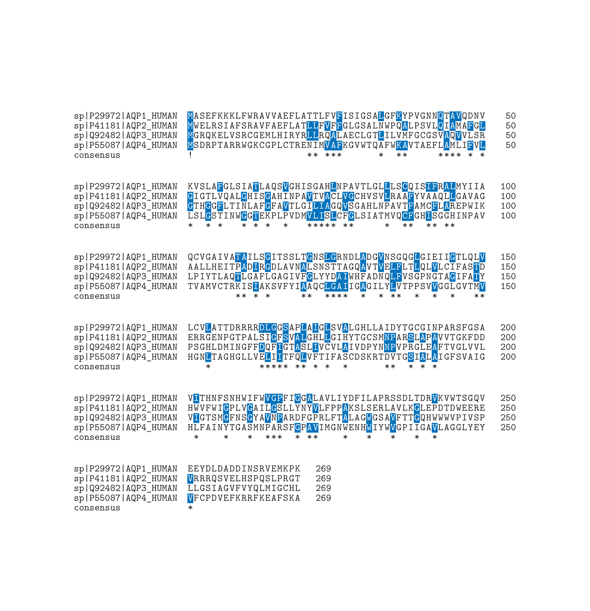
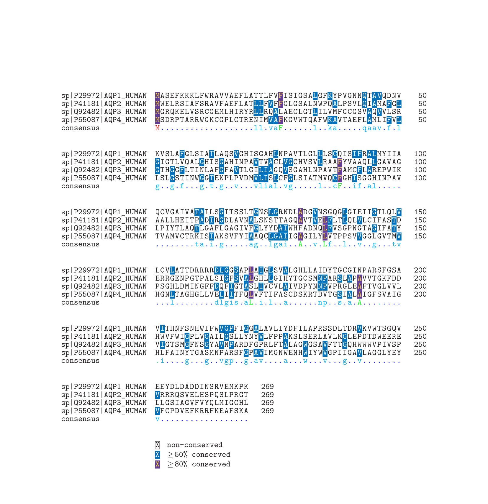

TeXshade でシーケンスアラインメントを組版してみる
2024/07/31
BioTeX
生物学分野において LaTeX が利用されているイメージはあまりないが, 実際はそうでもないようで, 生物学やバイオインフォマティクス分野でよく使用されるデータの可視化, 組版, 解析を支援する目的で開発されているプロジェクトとして BioTeX が存在する.
TeXshade
さて, 前述した BioTeX において開発された LaTeX でシーケンスアラインメントを組版するためのパッケージとして, TeXshade パッケージが存在する. 使用例を以下に示す1.
\documentclass{ltjsarticle}
\usepackage{texshade}
\thispagestyle{empty}
\begin{document}
\begin{texshade}{sample.fasta}
\end{texshade}
\end{document}
上記により, 以下のような出力を得る.

また, オプション指定により一致率を考慮したシェーディングが可能となる. 具体的には, 以下のように記述する.
\documentclass{ltjsarticle}
\usepackage{texshade}
\thispagestyle{empty}
\begin{document}
\begin{texshade}{sample.fasta}
\threshold[80]{50}
\showconsensus[ColdHot]{bottom}
\defconsensus{.}{lower}{upper}
\showlegend
\end{texshade}
\end{document}
上記により, 以下のような出力を得る2.

1. DVI ファイルを経由する LaTeX エンジンを使用している場合は, TeXshade パッケージを読み込む際に, ドライバオプションで DVI ドライバを指定する必要がある.
2. 執筆中 (2024/07/31).